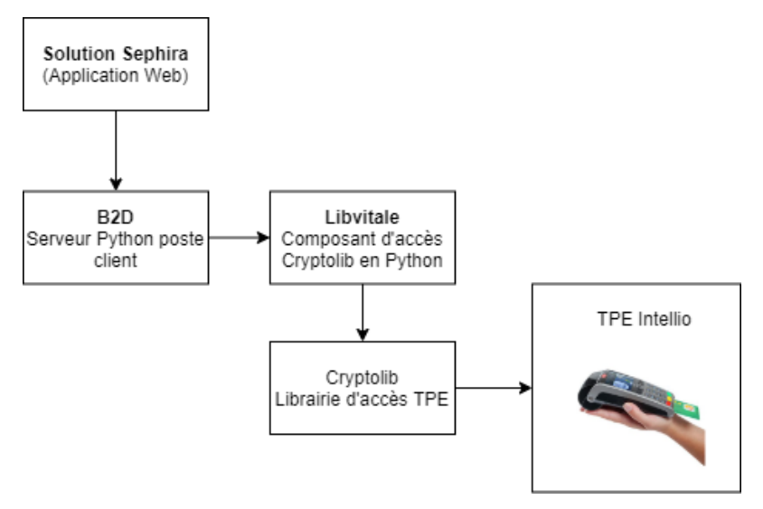
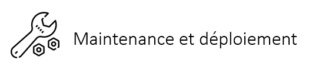
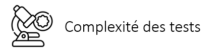
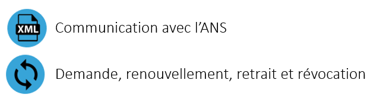

Soutenance intermédiaire
Sephira
Le 30/07/2020
MS2I
Sommaire

Sephira


Stratégie de l'entreprise

Mes activités

B2D

B2D - Mes travaux
Création d'un installeur marque blanche
Support des fournitures SESAM-Vitale
B2D


Webservices-TP

Portail de récupération des certificats
Résultats
Deux mois de retard dans la livraison
Une équipe technique support client allégée
Clients plus autonomes
Importance d'avoir des outils a jour
Ajout de nouvelles fonctionnalités
Correction des failles de sécurités
Inter-compatibilité entre composants
Montée de version postgresql
9.4 -> 12
Pourquoi mettre à jour ?
Déroulement de ce projet
Documentation sur les nouvelles versions
Mise à jour du composant permettant de communiquer à postgresql sur les différentes solutions
Mise en place d'une procédure avec plan de secours
Réalisation de la montée de version sur un environnement de recette
Vérifications
Réalisation de la montée de version sur la production